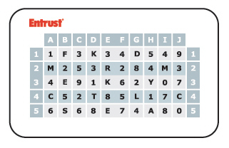

|
IdentityGuard Server 11.0 Administration Guide |
|
IdentityGuard Server 11.0 Administration Guide |
Grid authentication uses cards, each printed with a grid, as the authentication lookup tool. When asked to authenticate with a grid, the challenge presents the user with coordinates, B3, H1, for instance. The user looks up those coordinates on their grid card, and responds by typing the corresponding value. In the case of the grid card shown in the following figure, the correct response to the challenge, B3, H1, is E, 5. Each grid is unique and carries a serial number, so every user can be uniquely identified and authenticated.
A typical printed 5 by 10 grid card looks like this.

Typically, your organization creates grids, manufactures them (for example, by printing), distributes the grid cards to users, and then assigns the grid serial numbers to users so they can use them for authentication. Alternatively, you can let users self-register for grids through a portal and provide the grid cards shortly thereafter.
To configure Entrust IdentityGuard for grid authentication:
● Make sure administrators have the required permissions to complete all of the grid card management tasks (see Card permissions).
● Use the Policies pages of the Administration interface to:
– Ensure Grid is set as an authentication option for each applicable group (see Configuring grid card policies).
– Set grid card attributes and challenge size (see Configuring grid card design and behavior policies).
– Set grid card activation rules (see Creating grid cards).
● Use the Properties Editor, where applicable, to:
– Configure the grid repository (see Storing unassigned grid card information).
– Set the Radius proxy challenge strings (see Customizing VPN challenge strings).
● Distribute grid cards to your users. (See the Entrust IdentityGuard Deployment Guide for deployment scenarios.)
● Assign grid cards to users in the User Accounts or Cards pages of the Administration interface (see Assigning grid cards to users).
After you configure Entrust IdentityGuard policies and properties, configure your application to use grid authentication. For more information, see the Entrust IdentityGuard Programming Guide.